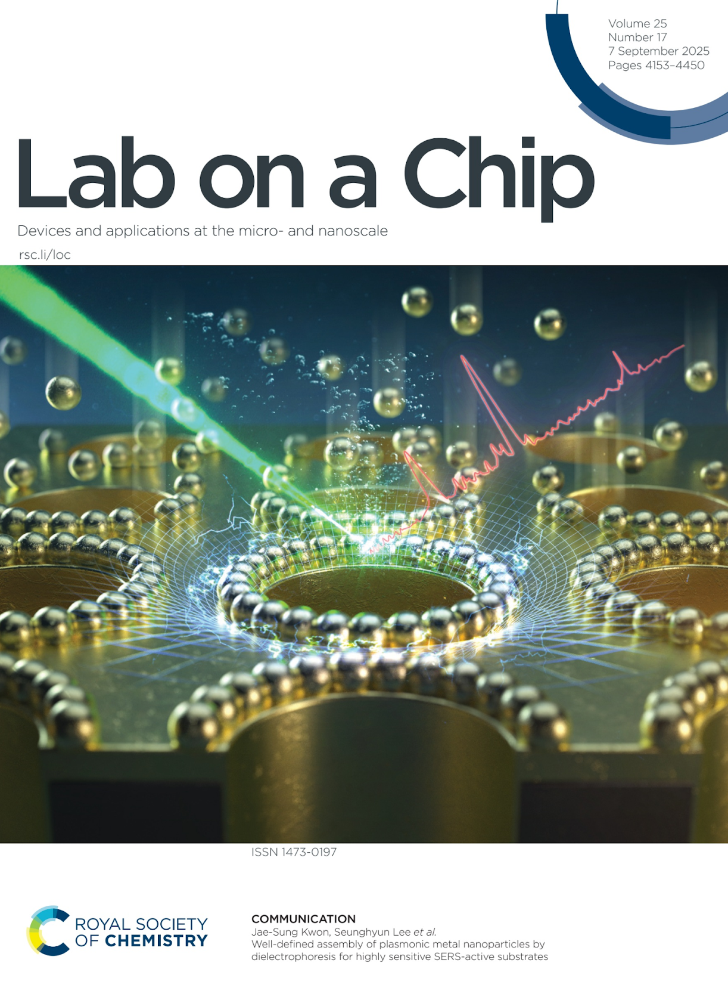
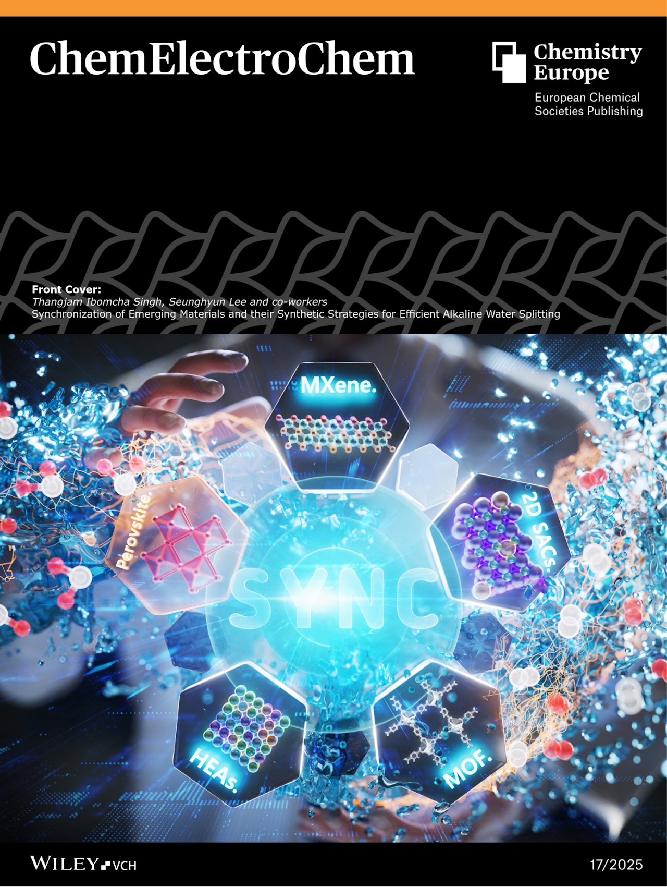
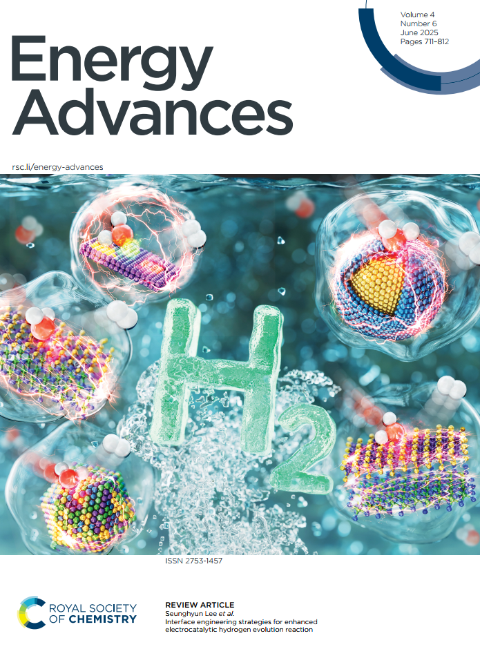
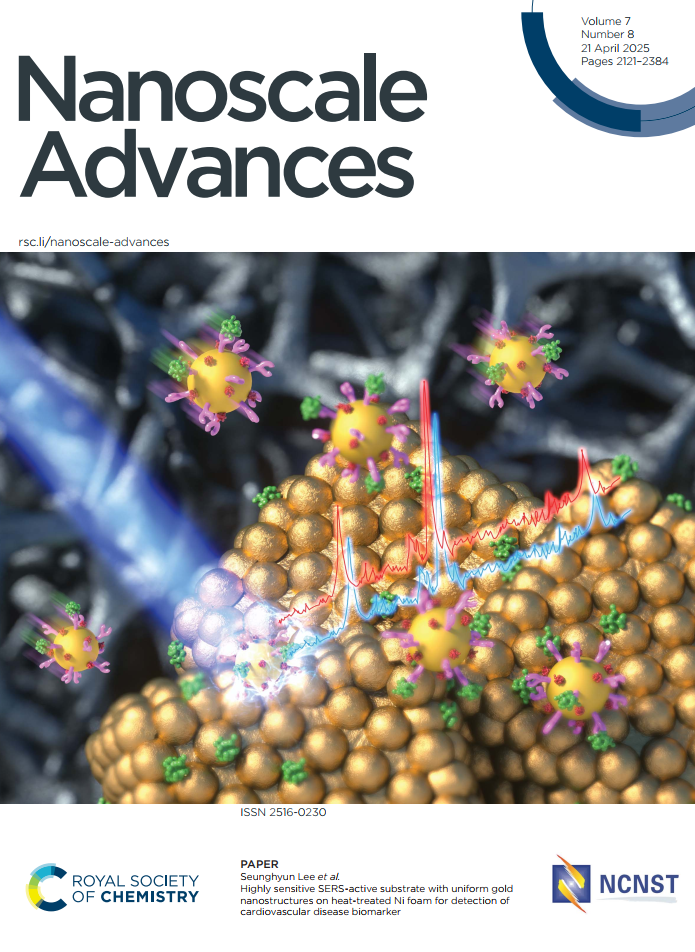

Publications
Papers and Books
Cover Arts

Lab on a Chip (2025)

ChemElectroChem (2025)

Energy Advances (2025)

Nanoscale Advances (2025)
Papers and Books
Beyond persistence: SERS-driven strategies for PFAS detection and monitoring
This review examines SERS-active platforms for the ultra-sensitive "molecular fingerprinting" of PFAS. It categorizes detection mechanisms into host-guest inclusion, covalent bonding, and physical adsorption to address environmental monitoring challenges.
Heterointerface‐Driven Electronic Modulation in MoO2@N/Mo‒ReS2 Hybrid for Efficient Alkaline HER, OER, and Overall Water Splitting
Introduces a MoO2@N/Mo-ReS2 hybrid catalyst that leverages heterointerface-driven electronic modulation to enhance the number of active sites and catalytic performance in overall alkaline water splitting.
Synchronization of Emerging Materials and their Synthetic Strategies for Efficient Alkaline Water Splitting
A comprehensive review of synthetic strategies for developing electrocatalysts that overcome theoretical overpotential limits in HER and OER for high-purity green hydrogen production.
Recent progress on plasmonic hybrid SERS-active substrates for molecular detection
Reviews advances in hybrid SERS substrates combining plasmonic metals with carbon nanostructures and MOFs, focusing on enhancing signal reproducibility and selectivity for diagnostic applications.
Well-defined assembly of plasmonic metal nanoparticles by dielectrophoresis for highly sensitive SERS-active substrates
Details a precision assembly method using dielectrophoresis to create uniform nanoparticle patterns, resulting in stable "hotspots" for trace-level molecular detection down to 10⁻¹⁰ M.
Morphology-controlled mesoporous core–shell carbon nanospheres decorated with Cu nanoparticles as highly efficient and reusable catalyst
Presents the synthesis of mesoporous core-shell carbon nanospheres with Cu nanoparticles, demonstrating high surface area and reusability for the efficient reduction of organic pollutants.
Interface engineering strategies for enhanced electrocatalytic hydrogen evolution reaction
Explores interface engineering as a key strategy to modulate electronic states and local environments of catalysts, optimizing water dissociation and hydrogen adsorption for superior HER performance.
Highly sensitive SERS-active substrate with uniform gold nanostructures on heat-treated Ni foam for detection of cardiovascular disease biomarker
Development of a uniform gold-decorated Ni foam substrate through heat treatment, achieving high SERS sensitivity for the detection of cardiac biomarkers like troponin I.
Photocatalysis-Derived Biomass Conversion for Green Hydrogen Production
Discusses integrating biomass valorization with photocatalytic water splitting to improve hydrogen yield while simultaneously producing value-added chemicals.